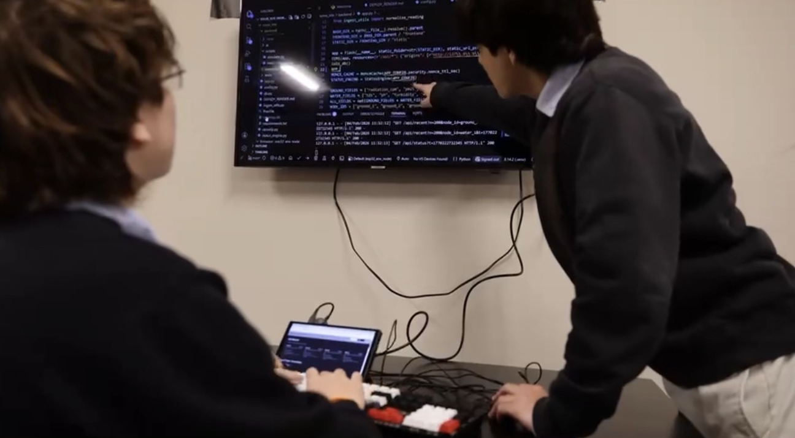
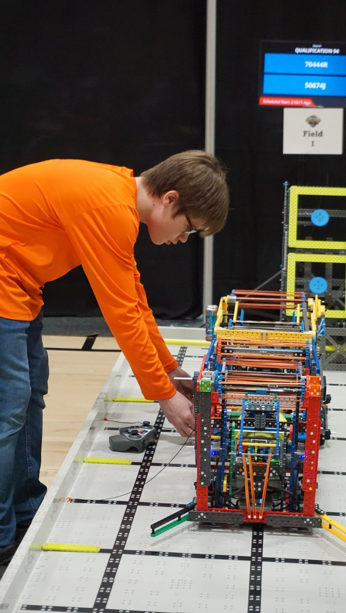

Hands-on build and programming sessions are central to each week of camp.
Roboreach Foundation operates a 4-week summer camp at our office and uses the same space as a year-round robotics training hub. We are building future community teams through a consistent skill-development process for students who lack access due to cost or limited school support, and students seeking proven, competitive-level mentorship and structured technical growth.

Hands-on build and programming sessions are central to each week of camp.

Students use controlled skills runs and game strategy practice to improve over time.
The camp combines technical instruction and team development with a clear weekly progression.
Outside summer camp, the office continues to serve as a structured training center for technical growth and competition readiness. This includes recurring practices, troubleshooting sessions, and role-based team development.
Roboreach does not yet field its own official competition teams. The program is intentionally building toward that through a camp-to-team pipeline.
Mentors include experienced VEX competitors from teams that have currently qualified to States. They coach students in the technical and team roles used in robotics programs.